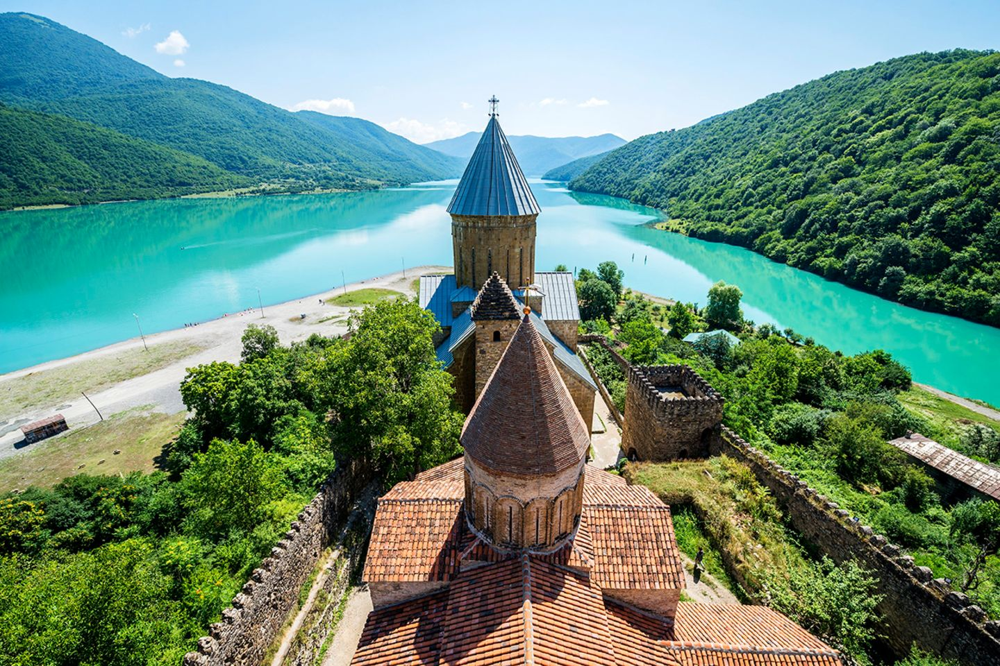

Mtskheta-Mtianeti (Georgian: მცხეთა-მთიანეთი, literally "Mtskheta-Mountain Area") is a region (Mkhare) in eastern Georgia comprising the town of Mtskheta, which serves as a regional capital, together with its district and the adjoining mountainous areas.
Ananuri was a castle and seat of the eristavis (Dukes) of Aragvi, a feudal dynasty which ruled the area from the 13th century. The castle was the scene of numerous battles. In 1739, Ananuri was attacked by forces from a rival duchy, commanded by Shanshe of Ksani and was set on fire. The Aragvi clan was massacred. However, four years later, the local peasants revolted against rule by the Shanshe, killing the usurpers and inviting King Teimuraz II to rule directly over them.
